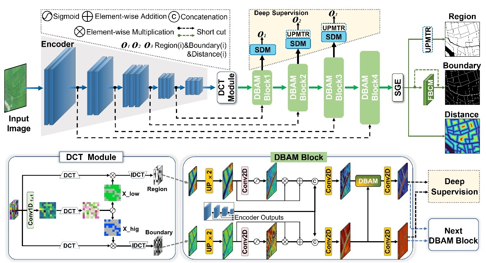
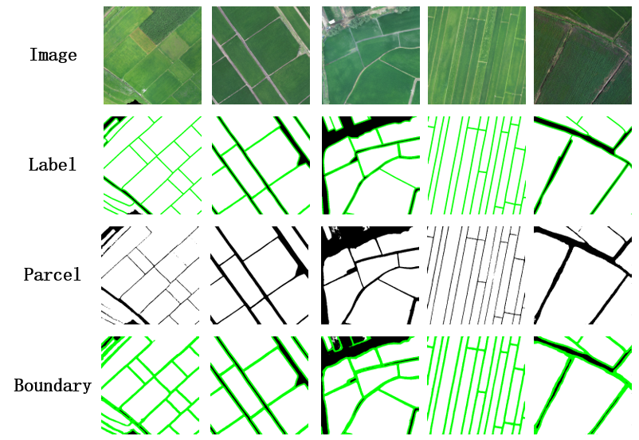
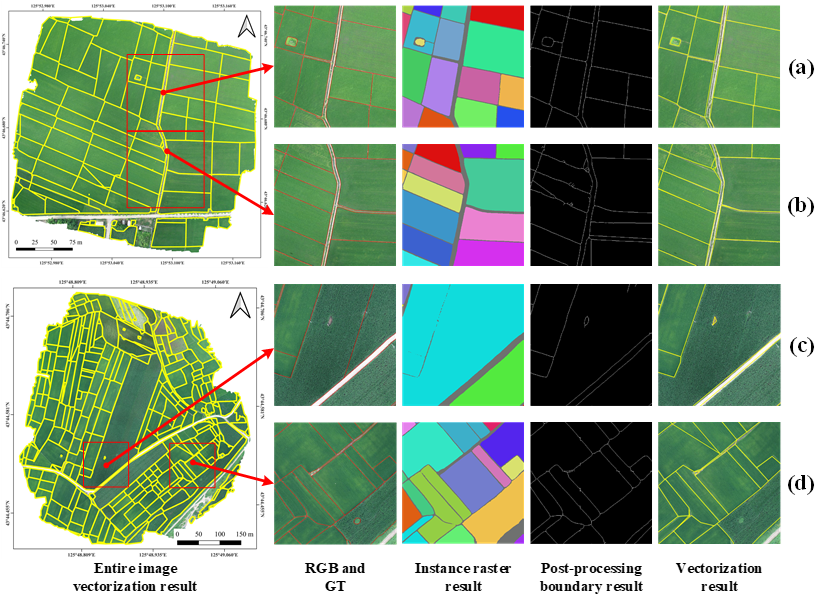

27 Field Parcel Identification Using UAV Imagery Based on the DCP-MTL Model
27.1 Introduction
Agricultural Cultivation Field Parcels (CFP) refer to areas within a specific land boundary where a single type of crop is cultivated during each agricultural production cycle. They are the smallest units for farmers to carry out agricultural activities such as sowing, management, and harvesting, and also serve as the fundamental units for implementing precision agriculture. In theory, they should be regarded as the minimum units for crop area statistics and yield estimation. Traditional CFP mapping primarily relies on field survey methods to collect location information followed by manual digitization, which is costly and inefficient. With the rapid development of remote sensing technology, especially the widespread application of high-resolution data and continuous advancements in imagery interpretation techniques, the efficient and automated extraction of CFP information has become increasingly feasible. However, previous studies have mainly depended on pixel-level classification methods and object-level analysis techniques based on imagery segmentation (such as superpixel regions), which generally lack agricultural semantics and are difficult to achieve a one-to-one correspondence with actual CFP. An end-to-end boundary-field multi-task learning CFP vectorization framework (Cultivated Parcel Vectorization Framework, CPVF) proposed based on ultra-high-resolution imagery not only enables precise correspondence with real CFP but also addresses current research challenges in finer CFP extraction (especially from aerial imagery).
27.2 Experimental Area and Data
Jilin Province is located in the northeast region of China (between 121°38′ to 131°19′ E and 40°50′ to 46°19′ N), characterized by a temperate continental monsoon climate with four distinct seasons, an annual precipitation ranging from 400 to 900 mm, an annual average temperature of 2–6 ℃, and average summer temperatures exceeding 23 ℃. The topography generally slopes from southeast to northwest, with the main landform types including mountains in the east and plains in the central and western regions, where the plains are primarily represented by the Songnen Plain and the Liaohe Plain. The major grain crops in Jilin Province include maize, rice, soybean, and wheat. Among them, maize is mainly cultivated in the central and western regions, with a sowing period from late April to early May and a harvesting period in mid-to-late September; rice is primarily cultivated in areas such as Jilin City and Yanbian Prefecture, generally transplanted in mid-to-late May and harvested in mid-to-late September; soybean is an important grain crop in the western regions of Jilin Province, usually sown from late April to early May and reaching maturity from late September to early October.
The steps involved in data processing are the following:
Data preparation. Acquire UAV imagery datasets and prepare vector parcel samples for label generation.
Data resampling. Resample the original imagery from 0.05 m resolution to 0.2 m, and then convert the digitized vector parcel data into raster format consistent with the resampled imagery, including both parcel regions and parcel boundaries: on the one hand, shrink the vector parcel polygons inward to generate parcel region masks and rasterize them to obtain region labels; on the other hand, convert the vector polygons into line data, buffer them with a width of 0.4 m to form boundary bands, and rasterize them to obtain boundary labels.
Image–label pair generation. Apply a sliding-window algorithm with a stride of 128 pixels to crop the original imagery into 1024 × 1024-pixel patches, producing a total of 14,034 image–label pairs. For imagery from other provinces, due to smaller data volumes, adopt non-overlapping cropping at 512 × 512 pixels. Meanwhile, to ensure data validity, remove image patches in which parcel area proportion is less than 10%, and exclude large numbers of no-value regions at the UAV image edges.
Euclidean distance map generation. Based on the above labels, generate Euclidean distance maps to represent the distance from each interior pixel of a parcel to the nearest boundary, thereby constructing four-tuple label sets of image–parcel region–parcel boundary–distance map.
The dataset constructed in this case is shown in Table 27.1. Among them, Jilin Province serves as the main region for training and evaluation, while nine other provinces (Hebei, Tianjin, Henan, Shanxi, Anhui, Zhejiang, Yunnan, Guangxi, and Hainan) are used to test the model’s generalization capability. Zhejiang includes summer middle-season/late rice samples (Zhejiang 1) and early spring early-season rice samples (Zhejiang 2), collectively covering diverse parcel morphologies, crop types, boundary characteristics, and topographic–climatic conditions. In addition, 360 independent UAV images not involved in training or validation are selected as a separate test set to ensure objectivity and reliability in model evaluation. The relevant parameters of the UHR-CFP dataset are detailed in Table 27.1.
| Area | Size | Resolution（Meter） | Account | Train/Validation/Test | Date |
|---|---|---|---|---|---|
| Jilin | 1024 | 0.2 | 14034 | 8530/2131/3553 | 2023.7 |
| Hebei | 512 | 0.2 | 310 | 0/0/310 | 2023.7 |
| Tianjin | 512 | 0.2 | 396 | 0/0/396 | 2024.8 |
| Shanxi | 512 | 0.2 | 267 | 0/0/267 | 2024.7 |
| Jiangsu | 512 | 0.2 | 251 | 0/0/251 | 2022.8 |
| Yunnan | 512 | 0.2 | 174 | 0/0/174 | 2024.7 |
| Guangxi | 512 | 0.2 | 151 | 0/0/151 | 2023.8 |
| Henan | 512 | 0.2 | 139 | 0/0/139 | 2022.4 |
| Anhui | 512 | 0.2 | 100 | 0/0/100 | 2022.6 |
| Hainan | 512 | 0.2 | 93 | 0/0/93 | 2023.9 |
| Zhejiang1 | 512 | 0.2 | 452 | 0/0/452 | 2022.8 |
| Zhejiang2 | 512 | 0.2 | 1800 | 1200/240/360 | 2023.3 |
27.3 Methods
This section describes the steps for generating CFPs using the CPVF method. Based on the dataset preparation method described in the previous section, we builtimage–parcel region–parcel boundary–distance map quadruple label sets for the study area. Then, we trained the PVF model to extract parcel regions and boundaries. The DCP-MTL model (Drone-Based Cultivation Parcel Extraction Multitask Learning, DCP-MTL) is employed to accurately extract the regions and boundaries of CFPs from UAV imagery. Subsequently, a Universal Vectorization Module (UVM) is utilized to generate vectorized instances of CFPs, thereby achieving the Ready-To-Use (RTU) application objective.
In the DCP-MTL model, a Discrete Cosine Transform (DCT) module is introduced for frequency-domain feature extraction, specifically decoupling high-frequency features to enhance the representation capability of parcel boundaries. Then, combined with deep supervision techniques, a Dual-Branch Attention Module (DBAM) and an Uncertainty Perception Module for Transition Regions (UPMTR) are designed to address issues in multi-scale CFPs, such as incomplete extraction of large parcels, failure to separately extract small or fragmented parcels, and adhesion between parcels. Finally, together with the Field Boundary Connectivity Module (FBCM), they form an integrated decoding module aimed at enhancing the connectivity of blurred parcel boundaries and improving the separability of densely adhered parcel regions.
After running DCP-MTL, we perform inference on the test sets using the trained model. Then, we converted the raster data of regions and boundaries obtained from the DCP-MTL model into vector parcel data through post-processing, in order to obtain RTU (Ready-to-Use) data.
27.4 Results
Table 27.2 presents the quantitative evaluation results of the DCP-MTL model on the UHR-CFP dataset, including pixel-level accuracy for both parcel regions and parcel boundaries. In the table, P denotes Precision, R denotes Recall, F1 represents the F1 score, IoU refers to the Intersection over Union, mIoU indicates the mean IoU, BF1 represents the boundary F1 score, BIoU refers to the boundary IoU, and BmIoU denotes the mean boundary IoU. The results demonstrate that the DCP-MTL model achieves satisfactory identification performance on both parcel regions and parcel boundaries, confirming that compared to single-task semantic segmentation approaches, modeling parcel region segmentation and parcel boundary segmentation as two interrelated tasks within a multitask framework can significantly enhance the overall performance of the model.
| Method | Region | Boundary | ||||||
|---|---|---|---|---|---|---|---|---|
| P (%) | R (%) | F1 (%) | IoU (%) | mIoU (%) | BF1 (%) | BIoU (%) | BmIoU (%) | |
| DCP-MTL | 95.09 | 94.11 | 94.33 | 92.88 | 82.72 | 70.57 | 60.94 | 78.15 |
Table 27.3 presents the accuracy evaluation results of the DCP-MTL model at both pixel-level and object-level. Here, GUC denotes the Global Under-Classification error, GTC denotes the Global Total-Classification error, and GOC denotes the Global Over-Classification error. The results show that the DCP-MTL model achieves satisfactory performance across all pixel-level evaluation metrics, demonstrating a clear advantage in parcel boundary identification. The improved boundary accuracy facilitates the separation of adjacent, previously conjoined parcels, thereby enhancing the object-level identification outcomes.
| Method | Pixel-class | Object-class | ||||||||
|---|---|---|---|---|---|---|---|---|---|---|
| Region | Boundary | Region | ||||||||
| P (%) | R (%) | F1 (%) | IoU (%) | mIoU (%) | BF1 (%) | BIoU (%) | GOC (%) | GUC (%) | GTC (%) | |
| DCP-MTL | 95.09 | 94.11 | 94.33 | 92.88 | 82.72 | 70.57 | 60.94 | 17.5 | 20.7 | 19.2 |
Figure 27.2 illustrates the identification details of the DCP-MTL model. The first row shows the true color imagery, the second row displays the ground truth labels, the third row presents the parcel identification results, and the fourth row shows the boundary identification results. The results indicate that in scenes where the interior of the parcels is relatively homogeneous and the boundaries are clear, the DCP-MTL model achieves accurate parcel area identification. Although the boundary extraction performance is moderate, the discontinuity of the boundary lines—especially when the boundary width is narrow—often leads to boundaries being misclassified as parcel areas, resulting in noticeable adhesion, which is particularly evident in the first and third columns. In scenes where the parcels are narrow, densely distributed, and have blurred boundaries (as in the fourth column), both parcel and boundary identification perform relatively better. The imagery in the fifth column is darker, with complex background regions and heterogeneous parcel interiors, yet the DCP-MTL model still achieves satisfactory identification results. Overall, across diverse scenes, the outputs of the DCP-MTL model closely approximate the ground truth, exhibiting excellent performance in both parcel area accuracy and boundary detail extraction.

Figure 27.3 shows the vector parcel results of two complete images (vector data shown in yellow). In each UAV image, two typical subregions were selected as examples. The results of individual parcels were obtained by performing connectivity analysis on the region data generated by the DCP-MTL model. In subregions (a) and (b), parcels are independent and exhibit no adhesion; whereas in subregions (c) and (d), varying degrees of parcel adhesion occur—adhesion in (c) is mainly caused by incomplete boundary extraction, while in (d) it results from missing boundaries.
To further resolve issues of parcel adhesion or unclosed boundaries, boundary refinement is applied through post-processing algorithms, thereby obtaining complete and closed vector parcel data. Compared with raster results, the vectorized results are smoother and more regular, effectively reducing over-segmentation and under-segmentation problems caused by blurred or broken parcel boundaries.

27.5 Conclusions
The CPVF approach enables end-to-end acquisition of vectorized instance-level CFP results from ultra-high spatial resolution imagery, without being constrained by specific geographic regions, terrain types (such as plains, hills, or mountains), or parcel distribution density, thus demonstrating applicability across various complex farmland scenes.
The DCP-MTL model innovatively incorporates a DCT module for frequency-domain feature extraction, and its integrated sub-decoder module constructed with deep supervision exhibits generalizable feature learning and multi-task synergy capabilities. Notably, the DBAM and UPMTR modules enhance fine-grained boundary representation and improve the separability of parcel areas, which can be extended to various instance-level object extraction tasks characterized by blurred boundaries or adhered targets. The Universal Vectorization Module (UVM) contributes to improved boundary continuity and enables efficient RTU vectorized delineation, making it suitable for vectorization scenes that require preserving the geometric regularity and topological independence of objects, beyond just CFP extraction.
Experimental results on the UHR-CFP dataset have validated the superiority of the DCP-MTL model, while its stable performance across different farmland scenes further demonstrates that the core concept of the CPVF approach can adapt to ultra-high spatial resolution imagery acquired by various sensors. This provides a universally applicable and complete solution for efficient instance-level object extraction and vectorization. Such generality underscores its significant application value and broad prospects for promotion in the fine-scale management of agricultural, land, ecological, and other domains.
27.6 Code and data availability
The code for the model and experiment is available in Github.